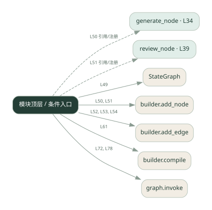

3-9 · 全课程第 49 节
持久化与暂停恢复
044.py
源码快照 48f5947fd2ed · 静态解析 · 2026-09-10
01 / 要完成的事
生成草稿，保存状态，在人审处暂停，再带决定恢复执行。
02 / 为什么要做
人工不会立即回复，进程也可能重启；状态需要跨等待保留。
03 / 当前代码状态
generate_node 返回固定草稿，并不调用大模型。使用 SQLite checkpoint 的框架示例，人审和保存器相关位置仍有填空；与 Go 的 checkpoints.json 不共用存储格式。
仍有下划线占位表达式，源文件行号：45, 60, 78。相应路径在补完前不能正常执行。
主要展示本地计算、内存状态或模拟流程；是否写文件/启动子进程请看调用表。 本次只做静态解析，没有运行练习，也没有替你填写或修改原代码。
04 / 调用图
打开大图 ↗实线：源码中的直接调用；虚线：函数引用/注册、动态调用或按方法名推断的候选。L 是调用所在源码行号。箭头不表示执行顺序或每次必经；分支、循环、异步调度及框架内部调用需结合源码。灰色是外部/未解析目标，橙色是动态分发；省略 print、len 和常规容器操作以减少干扰。孤立函数可能尚未接入。

先从 模块入口 出发，沿箭头找到本文件函数，再查看外部调用或动态分发。右侧调用清单保留所有静态调用点，能回到原文件逐行对照。
05 / 函数定位
| 函数 / 定义行 | 职责（源码注释） | 内部调用 |
|---|---|---|
generate_nodeL34 | 节点 1：生成内容（简化版，不真调 LLM） | 未发现显式函数调用（可能直接计算、读写状态或尚未实现） |
review_nodeL39 | 节点 2：人审 —— 在这里暂停图，等人类拍板 | 未发现显式函数调用（可能直接计算、读写状态或尚未实现） |
这样做的优点
长流程可以分多次运行，审核决定能进入后续状态。
代价与局限
恢复时要避免重复副作用；本地演示不自动解决多用户隔离与并发写入。
适用场景
需要等待审批的长流程原型。
不宜直接照搬
未设计事务、身份与幂等却直接承载重要写操作。
动手检验理解
在暂停后重新启动进程，检查是否读回同一份草稿并接受拒绝。
有未实现位置时先预测，再补齐验证。能启动不等于逻辑正确。
查看全部 18 个静态调用 / 引用点
| 调用方 | 目标 | 源码行 | 类型 |
|---|---|---|---|
| <模块入口> | StateGraph | 49 | 调用 |
| <模块入口> | builder.add_node | 50 | 调用 |
| <模块入口> | builder.add_node | 51 | 调用 |
| <模块入口> | builder.add_edge | 52 | 调用 |
| <模块入口> | builder.add_edge | 53 | 调用 |
| <模块入口> | builder.add_edge | 54 | 调用 |
| <模块入口> | builder.compile | 61 | 调用 |
| <模块入口> | print | 65 | 调用 |
| <模块入口> | print | 66 | 调用 |
| <模块入口> | print | 67 | 调用 |
| <模块入口> | print | 71 | 调用 |
| <模块入口> | graph.invoke | 72 | 调用 |
| <模块入口> | print | 73 | 调用 |
| <模块入口> | graph.invoke | 78 | 调用 |
| <模块入口> | print | 79 | 调用 |
| <模块入口> | print | 80 | 调用 |
| <模块入口> | generate_node | 50 | 引用/注册 |
| <模块入口> | review_node | 51 | 引用/注册 |